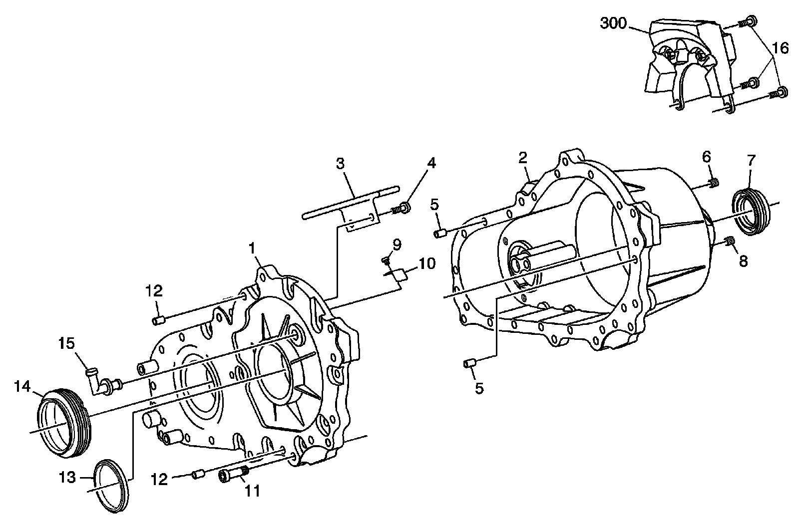
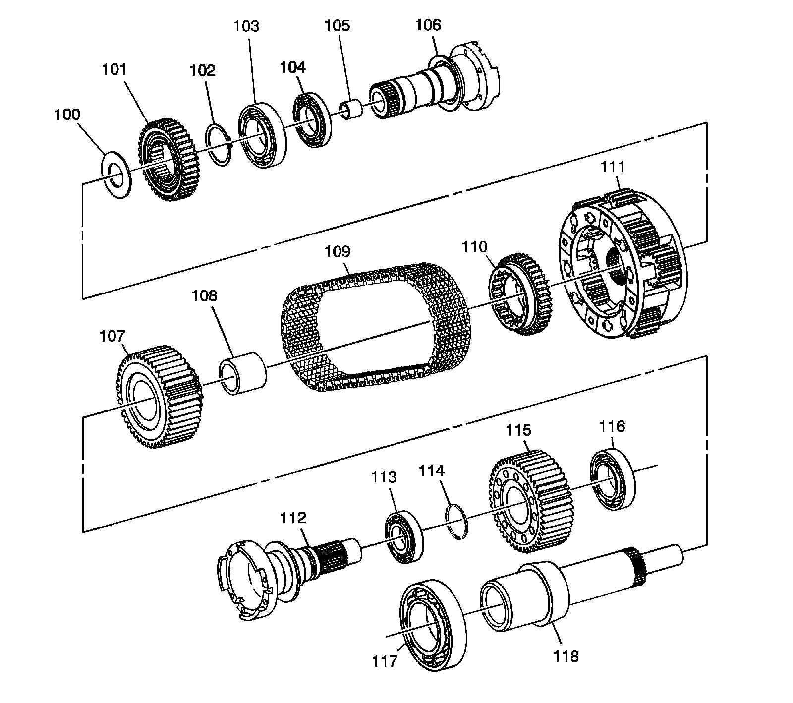

Transfer Case
Transfer Case Disassembled View
Case Components
Case Components:

1 - Case
2 - Cover
3 - Chain Snubber
4 - Chain Snubber Bolt
5 - Locating Pin
5 - Locating Pin
6 - Fill Plug
7 - Rear Output Seal
8 - Drain Plug
9 - Vent Baffle Bolt
10 - Vent Baffle
11 - Case Bolt
12 - Locating Pin
12 - Locating Pin
13 - Input Shaft Seal
14 - Front Output Seal
15 - Vent
16 - Bolts
300 - Vibration Dampener - V6 Only
Internal Components
Internal Components:

100 - Thrust Washer
101 - Rear Sun Gear
102 - Rear Output Shaft Snap Ring
103 - Rear Output Shaft Bearing
104 - Rear Output Shaft Bearing
105 - Rear Output Shaft Bushing
106 - Rear Output Shaft
107 - Upper Sprocket
108 - Upper Sprocket Bushing
109 - Chain
110 - Front Sun Gear
111 - Carrier
112 - Front Output Shaft
113 - Front Output Shaft Bearing
114 - Front Output Shaft Snap Ring
115 - Lower Sprocket
116 - Front Output Shaft Bearing
117 - Input Shaft Bearing
118 - Input Shaft